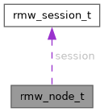

- Generated by
 1.15.0
1.15.0
|
nros rmw-cffi
C vtable for plugging a third-party RMW backend into nros
|
#include <rmw_entity.h>

Data Fields | |
| uint8_t | _reserved [8] |
| void * | backend_data |
| const char * | name |
| const char * | namespace_ |
| rmw_session_t * | session |
A graph node — upstream rmw_node_t, minus what an image has no use for.
Phase 376 W4. Storage is CALLER-OWNED, like every other entity here: the runtime hands create_node a zero-initialised shell and the backend writes its backend_data into it.
Why a node exists at all when an image opens ONE session. The session half of that statement holds; the node half does not, and our own code says so. Executor keeps a node table, and CffiSession::entity_view exists SOLELY to fabricate a per-call session carrying the entity's owning-node identity — its own comment reads "one session can host N graph nodes". The zenoh backend then re-derives a node registry from that string by linear-scanning declared tokens. So node identity already reaches the backend, through a side channel, in every image.
Done, W5/B1 (2026-08-24). create_publisher / create_subscription / create_service / create_client take const rmw_node_t * the way upstream does. That retired the entity_view fabrication — the shim now owns a node table and calls create_node once per distinct (name, namespace), which is only true because Executor::create_node deduplicates (W5/B1.a).
Still owed: zenoh's ensure_node_liveliness still linear-scans its own per_node_liveliness table. Retiring it needs a create_node method on the Rust Rmw/Session trait plus a trampoline in RustBackendAdapter, so that a Rust backend can be TOLD about a node the way a C one is. The slot and the table it needs both exist now; only that trait hop is missing. Do not read this paragraph as done — the first draft of this comment said the registry was retired, which it was not.
Not carried from upstream: implementation_identifier and data (one image links one backend per session, so there is nothing to disambiguate).
session IS carried, and is our context. Upstream's node reaches its context that way and every rmw_create_* relies on it; a node with no route to its session cannot be the only argument those slots get, which is what made this field the precondition for the whole change rather than a convenience. Set by the runtime BEFORE create_node, and stable for the node's life.
| uint8_t rmw_node_t::_reserved[8] |
Reserved; must be zero.
| void* rmw_node_t::backend_data |
Opaque backend state. NULL until create_node succeeds.
| const char* rmw_node_t::name |
Node name. Borrowed; outlives the node.
| const char* rmw_node_t::namespace_ |
Node namespace. Borrowed; outlives the node.
| rmw_session_t* rmw_node_t::session |
The session this node lives on — upstream's context. Set by the runtime before create_node; never NULL in a node the runtime hands to a slot. A backend reaches its own session state through node->session->backend_data.